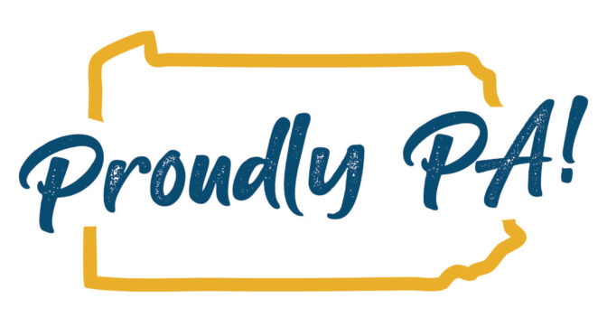

Travelling to Central Pennsylvania
Finding activities when travelling can become difficult, especially when every article overwhelms you with 100 items on a single itinerary. This site will distill some of the most memorable and time-worthy events to mark on your calendar throughout the year. There are great festivals and gatherings that occur right here in Pennsylvania. From Jubilee day, the Renaissance fair, Ski Roundtop, and even the Farm Show, there are numerous events that you and your family can enjoy! This site has them categorized by seasons so you are able to plan accordingly. Let us know any new events or any events that we may have missed as well!
